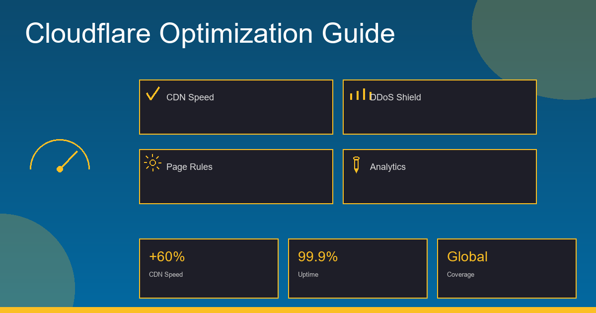

Cloudflare is one of the most powerful tools in a technical SEO engineer's arsenal — and one of the most dangerous when misconfigured. Done right, it dramatically improves TTFB, protects your crawl budget, and shields your site from downtime. Done wrong, it blocks Googlebot, breaks crawler access, and tanks your rankings.
After configuring Cloudflare for dozens of client sites over 15 years, here's the complete setup guide — edge caching, WAF, prerender for JavaScript sites, rate limiting, and bot protection — all configured with SEO outcomes in mind.
1. Why Cloudflare Matters for SEO
Cloudflare is a reverse proxy CDN sitting between your origin server and the world. Every request — from users, crawlers, and bots — passes through Cloudflare's edge network before reaching your server. This gives you:
Speed and Core Web Vitals
Cloudflare serves cached assets from edge nodes closest to the visitor, dramatically reducing TTFB. Faster TTFB improves LCP (Largest Contentful Paint) — one of Google's Core Web Vitals. In my testing, a well-configured Cloudflare cache typically reduces TTFB from 400–800ms to under 100ms for cached pages globally.
Crawlability and Crawl Budget
Cloudflare caches pages so Googlebot receives fast responses and can crawl more pages within your crawl budget. A slow server forces Googlebot to slow its crawl rate — Cloudflare's edge caching eliminates this bottleneck. DDoS protection prevents downtime that would otherwise remove pages from Google's index.
2. Edge Caching Setup
Cloudflare's default caching configuration is conservative — it only caches static assets (images, CSS, JS) and does NOT cache HTML pages by default. For SEO, you want to cache HTML pages at the edge. Here's how to configure it properly:
Cache Rules (Recommended Approach)
Use Cloudflare's Cache Rules (under Caching > Cache Rules) to define precisely what gets cached and for how long:
# Cache Rule 1: Cache static marketing pages for 24 hours
Field: URI Path
Operator: starts with
Value: /blog/ OR /services/ OR /about/
Action: Eligible for cache
Edge TTL: Respect origin, override to 86400 (24h)
Browser TTL: 3600 (1h)
# Cache Rule 2: Bypass cache for dynamic/authenticated pages
Field: URI Path
Operator: starts with
Value: /admin/ OR /api/ OR /cart/ OR /checkout/
Action: Bypass cache
# Cache Rule 3: Cache static assets aggressively
Field: File extension
Operator: is in
Value: css, js, png, jpg, webp, svg, woff2
Action: Eligible for cache
Edge TTL: 2592000 (30 days)
Browser TTL: 86400 (1 day)Cache Level Configuration
Under Caching > Configuration, set Caching Level to Standard. Do not use "Ignore Query String" unless you've verified that your site doesn't use query strings for different content — this setting can cause Cloudflare to serve wrong cached versions.
Purge Cache on Deploy
Always purge the Cloudflare cache when you deploy new content. Use the Cloudflare API or the dashboard's "Purge Everything" button. For CMS sites, set up a deploy hook to call POST /zones/{zone_id}/purge_cache with {"purge_everything": true} automatically.
3. Prerender Setup for JavaScript-Heavy Sites
If your site uses React, Vue, Angular, or any JavaScript-heavy framework without server-side rendering, Googlebot may struggle to index your content. JavaScript rendering consumes crawl budget and can delay indexing by days or weeks.
The solution: use a prerender service to serve fully-rendered HTML to crawlers, while real users get the JavaScript SPA experience. This can be implemented via Cloudflare Workers:
Cloudflare Worker: Prerender for Crawlers
// Cloudflare Worker — serve prerendered HTML to crawlers
// Deploy in Workers & Pages > Create Worker
const PRERENDER_SERVICE = 'https://service.prerender.io/';
const PRERENDER_TOKEN = 'YOUR_PRERENDER_TOKEN';
// User agents that should receive prerendered HTML
const CRAWLER_AGENTS = [
'googlebot', 'bingbot', 'slurp', 'duckduckbot',
'baiduspider', 'yandexbot', 'facebot', 'twitterbot',
'linkedinbot', 'embedly', 'quora link preview',
'showyoubot', 'outbrain', 'pinterest', 'developers.google.com'
];
export default {
async fetch(request) {
const url = new URL(request.url);
const userAgent = (request.headers.get('User-Agent') || '').toLowerCase();
const isCrawler = CRAWLER_AGENTS.some(agent =>
userAgent.includes(agent)
);
// Only prerender for crawlers, not for real users
if (isCrawler && !url.pathname.match(/\.(js|css|xml|less|png|jpg|jpeg|gif|pdf|doc|txt|ico|rss|zip|mp3|rar|exe|wmv|doc|avi|ppt|mpg|mpeg|tif|wav|mov|psd|ai|xls|mp4|m4a|swf|dat|dmg|iso|flv|m4v|torrent|ttf|woff|woff2|svg)$/)) {
const prerenderUrl = `${PRERENDER_SERVICE}${request.url}`;
const prerenderRequest = new Request(prerenderUrl, {
headers: {
'X-Prerender-Token': PRERENDER_TOKEN,
'User-Agent': request.headers.get('User-Agent') || ''
}
});
return fetch(prerenderRequest);
}
// Regular users get the origin response
return fetch(request);
}
};4. WAF Configuration
Cloudflare's Web Application Firewall (WAF) is essential for security, but it must be configured carefully to avoid blocking legitimate crawlers. The default managed rulesets are generally safe, but custom rules need careful attention.
Managed Rulesets
Enable the Cloudflare Managed Ruleset and the OWASP Core Ruleset (Security > WAF > Managed Rules). Start with "Log" action before switching to "Block" — this lets you see what would be blocked without impacting traffic. Review the logs for false positives, particularly from known good crawlers, before enabling Block mode.
Whitelist Googlebot and SEO Crawlers
Create a WAF Skip rule to bypass all WAF checks for verified search engine crawlers. Place this rule at the top of your WAF rule order with the highest priority:
# WAF Skip Rule — Whitelist known good crawlers
# Security > WAF > Custom Rules > Create Rule
# Place this FIRST (highest priority) in your rule list
Rule Name: Skip WAF for Search Engine Crawlers
IF (
(http.user_agent contains "Googlebot") OR
(http.user_agent contains "Google-InspectionTool") OR
(http.user_agent contains "Bingbot") OR
(http.user_agent contains "Slurp") OR
(http.user_agent contains "DuckDuckBot") OR
(http.user_agent contains "Screaming Frog") OR
(http.user_agent contains "Semrushbot") OR
(http.user_agent contains "AhrefsBot")
)
THEN: Skip > WAF Managed RulesCustom WAF Rules for Common Threats
Beyond the managed rulesets, these custom rules cover common threats without impacting crawlers:
- Block requests with empty User-Agent strings (legitimate crawlers always identify themselves)
- Block requests scanning for
wp-admin,xmlrpc.phpif you're not running WordPress - Block SQL injection patterns in URL query strings
- Challenge (not block) requests from countries with no legitimate business relevance to your site
5. Rate Limiting
Rate limiting protects your origin server from being overwhelmed — by DDoS attacks, credential stuffing, and aggressive scrapers. The key is to set limits high enough that legitimate crawlers are never affected.
Safe Rate Limiting Thresholds
Recommended Rate Limits by Endpoint Type
These thresholds protect against abuse without impacting Googlebot (which typically crawls at 1–3 req/sec for most sites):
- API endpoints (
/api/*): 100 requests / 60 seconds per IP - Login / auth forms: 5 requests / 60 seconds per IP — Log + Challenge
- Contact / signup forms: 10 requests / 60 seconds per IP
- General pages: 500 requests / 60 seconds per IP (rarely needed unless under attack)
- XML sitemap: No rate limit (Googlebot needs unrestricted access)
Exclude Verified Good Bots from Rate Limits
In each Rate Limiting rule, add an exception condition. Under "When incoming requests match... except if":
# Rate Limit Exception for Known Good Crawlers
Except if: (cf.client.bot) is true
# The cf.client.bot field is Cloudflare's verified bot detection
# It validates the actual IP range, not just the user agent string
# This safely excludes Googlebot, Bingbot, and other verified crawlers6. Bot Protection
Cloudflare's bot protection tiers range from free basic tools to enterprise Bot Management. Here's how to configure each level without breaking crawler access:
Bot Fight Mode (Free/Pro)
Bot Fight Mode (Security > Bots) detects and blocks obvious bots — automated traffic using headless browsers, known attack tools, and scrapers. It does NOT block verified good bots like Googlebot by default. Safe to enable on most sites. Start with "Log" mode first to verify no false positives.
Super Bot Fight Mode (Business/Enterprise)
Super Bot Fight Mode adds more sophisticated bot detection including TLS fingerprinting and behavioral analysis. Critical configuration for SEO:
- Set Verified Bots to "Allow" — this covers Googlebot, Bingbot, and other verified search engine crawlers
- Set Definitely Automated to "Managed Challenge" (not Block) initially, then review logs
- Set Likely Automated to "Log" only — never "Block" without extensive monitoring
Custom Bot Rules for SEO Scrapers
You may want to allow some third-party SEO tools while blocking generic scrapers. Use Firewall Rules to manage specific UA strings:
# Allow specific SEO tools, block generic scrapers
# Security > WAF > Custom Rules
# ALLOW Rule (priority 1):
IF user_agent contains "Screaming Frog" OR
user_agent contains "Ahrefs" OR
user_agent contains "SEMrush" OR
user_agent contains "Moz"
THEN: Skip all security features
# CHALLENGE Rule (priority 2):
IF user_agent contains "python-requests" OR
user_agent contains "curl" OR
user_agent contains "wget" OR
user_agent is empty
THEN: Managed ChallengeSummary: Cloudflare SEO Configuration Checklist
- ✅ Cache Rules configured — HTML pages cached at edge, dynamic pages bypassed
- ✅ Always Online enabled to prevent 5xx during downtime
- ✅ Cache purge integrated into deployment pipeline
- ✅ WAF Skip rule for verified search engine crawlers (highest priority)
- ✅ WAF Managed Ruleset + OWASP enabled — Log mode first, then Block
- ✅ Rate Limiting on API/form endpoints, with
cf.client.botexception - ✅ Bot Fight Mode enabled with Verified Bots set to Allow
- ✅ Prerender Worker deployed (if using client-side only JS framework)
- ✅ Post-setup verification: Google Search Console URL Inspection test

Anju Batta
Senior Full Stack Developer, Technical SEO Engineer & AI Automation Architect with 15+ years of experience. Configuring Cloudflare, Next.js, and AI agent systems for maximum performance from Chandigarh, India.
Get Cloudflare Configuration Help →